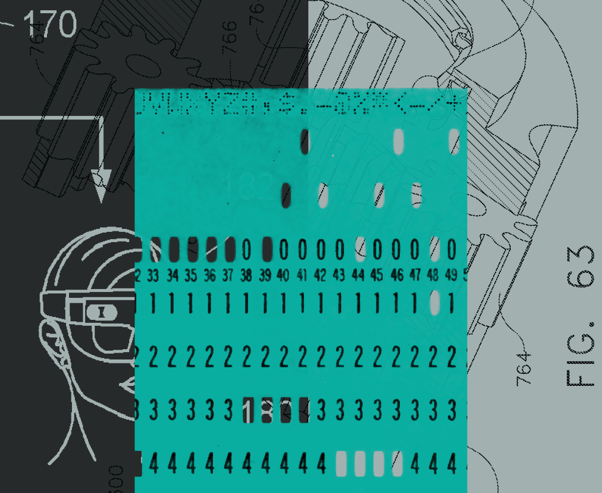
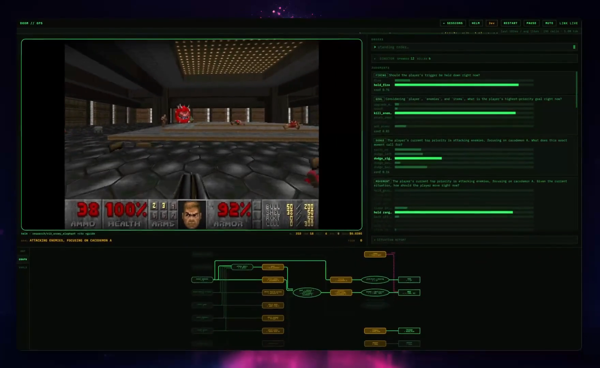
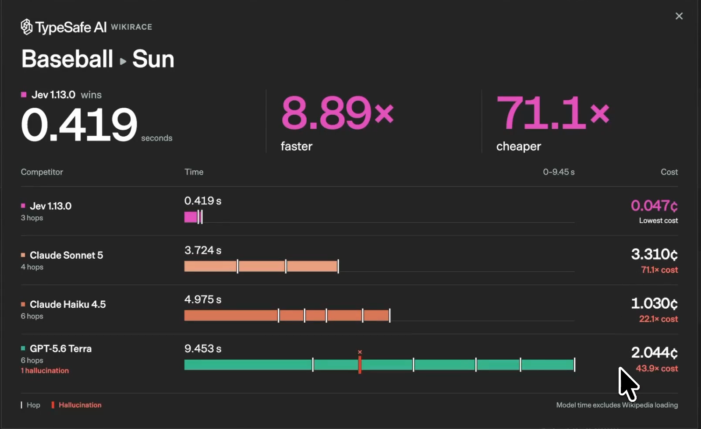
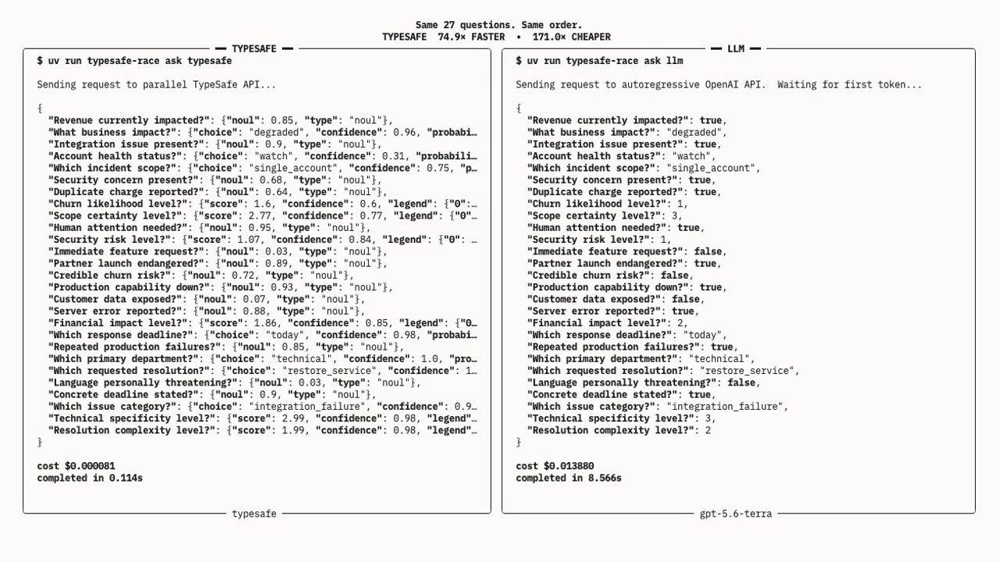
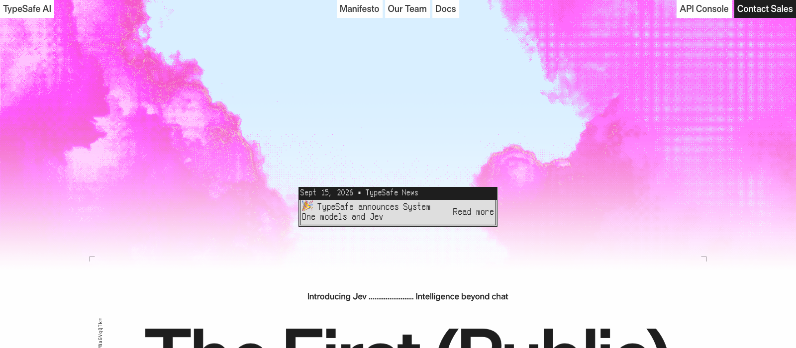
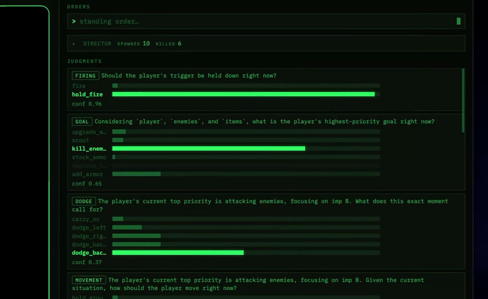
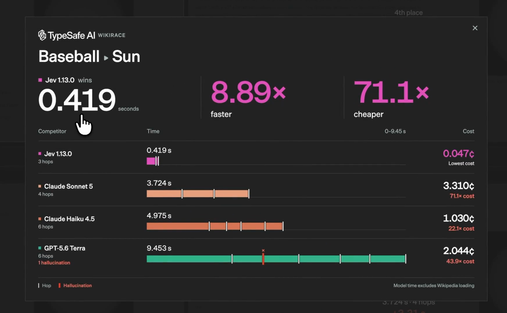
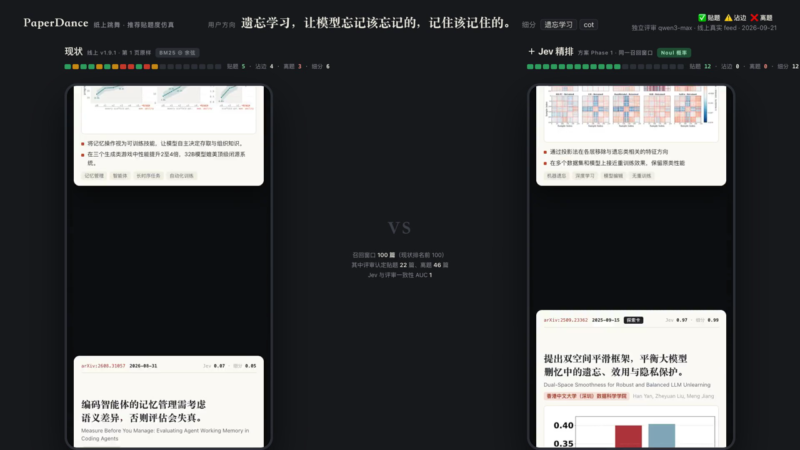

TypeSafe AI · 2026-09-15 发布 · System One Model
Jev
一个不生成文本的模型：给它材料和选择题，它给每个选项一个校准过的概率。发布一周：HN 近 2000 分、Vercel 24 小时 13% 付费团队、15 个开源复现
可lip





00背景 · TypeSafe AI · 旧金山
从 OpenAI 后训练组出来的一家公司
00背景 · 2026-09-15 → 09-21 · 左：各模型发布当天 Hacker News 帖子的分数
有多火
00现状 · 这期内容从哪来
没有论文，没有权重：官方公开的，和社区反推的
01
什么是 Jev
01什么是 Jev · 官方 demo：同样 27 道题
材料 + 选择题 → 每个选项一个概率
不写字、不解释、不推理。左：Jev 0.114 s · $0.00008 右：GPT-5.6 Terra 8.566 s · $0.0139
01什么是 Jev · 接口 · 官方文档
输入：材料 + 三种题 输出：只有数
每百万输入 token $0.042 · 输出免费 · 单请求 64k · 9 月 21 日起不用排队，注册送 $5
01什么是 Jev · 官方 API · 同一条工单 · 原样
发过去的，和收回来的
请求 · 一个 JSON
POST https://api.typesafe.ai/v1/systemone Authorization: Bearer <你的 key> { "model": "jev-latest", "state": "你好，我三天前买的会员到现在还没开通， 钱已经扣了，客服电话也打不通，今天不解决我就去投诉。", "questions": { "部门": { "type": "choice", "instructions": "这条消息应该转给哪个团队？", "criteria": {"计费": "扣款、发票、退款、支付问题", "技术": "功能故障、接口、bug", "销售": "价格、套餐、升级"} }, "情绪": { "type": "score", "instructions": "客户有多生气？", "criteria": ["平静", "不满但克制", "非常愤怒"] }, "威胁投诉": { "type": "noul", "instructions": "客户是否威胁要投诉或采取进一步行动？" } } }
返回 · 全是数
HTTP 200 · 服务端 89 ms · 469 个输入 token · 2026-09-21 实测 { "model": "jev-1.13.0", "answers": { "部门": { "type": "choice", "choice": "计费", "probabilities": {"计费": 0.89, "技术": 0.10, "销售": 0.01}, "confidence": 0.84 }, "情绪": { "type": "score", "score": 1.66, "probabilities": {"0": 0.00, "1": 0.34, "2": 0.66}, "legend": {"0": "平静", "1": "不满但克制", "2": "非常愤怒"}, "confidence": 0.49 }, "威胁投诉": { "type": "noul", "noul": 0.98 } }, "usage": {"input_tokens": 469, "output_tokens": 75} }
01什么是 Jev · 实测 · jev-1.13.0 · 469 token · 服务端 89 ms
一条工单，三道题，89 毫秒
02
动机
02Motivation · Diogo Almeida · InstructGPT 作者
「一个任务做对 95%，但不说哪 5% 它不行，就没法自动化」
03
架构
03架构 · 计算图 · 由 1 万次探针反推，复现印证
一份 state，三条互不相见的分支，没有 decode
03架构 · 放大一条分支 · 部门这道题
最后一个 token 做决定，看得到本分支的一切
03架构 · 三种原语的读出 · 官方文档给出的公式
三种头：softmax · 期望 · sigmoid
03架构 · 证据 · 服务端上报的中位耗时 · Archer Hume 测量
延迟随 state 线性，随问题数持平
03架构 · 底座 · 官方两句话，其余是反推
底座画像
Transformer，对预训练 LM 做后训练
TechCrunch 采访 · docs · 官方
≈10B
激活参数 · 30k token 跑 160–220 ms 反推 · 70B dense 需要 1 秒多
因果 decoder，大概率 MoE
前缀 KV cache + 后缀分支只在因果注意力下自然成立 · prefill-only 是算力瓶颈
84.6%
MMLU-Pro · 14 个学科 1.2 万道 10 选 1 的知识题 · GPT-4o 72.6%、DeepSeek-R1 84.0%、8B 模型 40–55%
自定义分词器
192 个公开分词器全不匹配 · 数字逐个切 · 最接近 Qwen（348/415 探针一致）
64k/ 32k
整请求 / 单分支上限 · 纯文本 · 英文为主 · 不做按客户微调
04
训练
04训练 · 同一个框架，只差奖励
三条后训练路线
| 奖励来自 | 奖励作用在 | 期望奖励最大时 p 的形状 | 产物 | |
|---|---|---|---|---|
| RLHF Reinforcement Learning from Human Feedback · 人类反馈 | reward model 的偏好分 | 采样出的文本 | 收窄到高分模式（mode dropping） | 会讨好的生成器 |
| RLVR Reinforcement Learning with Verifiable Rewards · 可验证奖励 | 采样答案对不对，0 / 1 | 采样出的那一个动作 | 全部质量压到 argmax | 会做题，不会说「不知道」 |
| RLCD Reinforcement Learning for Calibrated Decisions · 校准的决策 | proper scoring rule（log / Brier） | 整个分布 p | p = 真实条件概率 | 概率诚实的判断器 |
05
数据
05数据 · 官方说法 · 原话
创始人怎么说数据
训练数据 100% 合成，一个真实样本都没有
TechCrunch 2026-09-18："trained exclusively on synthetic data"
「我们很早就赌自己会造全部数据，这是我这辈子最好的一个赌注——比这次发布好，比 RLHF 还好」
Diogo Almeida · TechCrunch 采访
公司一半的人在一个实验室里，专门做「统计上被充分理解的合成数据」
TechCrunch："half its staff to a lab developing statistically well-understood synthetic data"
「数据比架构有意思得多」· 任务 > 数据 > 算力 > 算法 · 客户数据不进训练
HN 回复 · 博客 The Bitterest Lesson · docs Models 页
05数据 · 官方：训练数据 100% 合成 · 一半员工在一个合成数据实验室
倒果为因：先抽结果，再造材料
05数据 · 模拟器 · 一条工单的四步 · 数字是示例
模拟器怎么造一条数据
05数据 · 转模拟器的旋钮 · 目标分布
三种样本，一个代价
06
实验
06实验 · 官方 evals · 四个工作流平均 · 标签 = GPT-6 Astra 与 Fable 5.1 高推理档答案的平均
四个工作流平均：67.8% · $0.0004 · 0.4 s

06实验 · 官方 evals · 准确率 / 每条成本 · 延迟 · 其他模型按供应商默认推理设置
客服和告警持平或胜出，发票输 13–17 个点
| 工作流 | Jev | GPT-5.6 Terra | GPT-5.6 Sol | Opus 5 |
|---|---|---|---|---|
| 安全告警 | 61.7% $0.0001 · 0.3 s | 51.2% $0.0119 · 5.7 s | 62.5% $0.0295 · 8.5 s | 66.2% $0.0574 · 15.1 s |
| Agent trace 审核 | 71.6% $0.0003 · 0.5 s | 73.0% $0.0209 · 11.4 s | 76.6% $0.0575 · 40.3 s | 75.2% $0.1033 · 27.4 s |
| 发票处理 | 61.8% $0.0011 · 0.5 s | 74.7% $0.0778 · 17.3 s | 79.1% $0.2152 · 34.3 s | 78.4% $0.4856 · 92.1 s |
| 客服 | 76.0% $0.0001 · 0.4 s | 72.7% $0.0111 · 6.0 s | 78.3% $0.0323 · 10.1 s | 72.4% $0.0579 · 16.6 s |
| 平均 | 67.8% $0.0004 · 0.4 s | 67.9% $0.0304 · 10.1 s | 74.1% $0.0836 · 23.3 s | 73.1% $0.1761 · 37.8 s |
06实验 · 独立评测 · 校准 · 左：18,514 封邮件的垃圾率按 Jev 报的概率分桶（Arize）
两端可信，中间不可信
06实验 · 独立评测 · 准确率 · 每集 200–300 条
短文本持平小模型，要推理的输给前沿模型
| 任务 | Jev | 对手 | 来源 |
|---|---|---|---|
| Enron 垃圾邮件 · 2 类 | 98.7% | gpt-5.6-luna 98.0% · gpt-5.4-mini 97.7% | amankumar |
| SST-2 情感 · 2 类 | 95.7% | 93.0% · 92.7% | amankumar |
| AG News 主题 · 4 类 | 91.3% | 89.7% · 88.3% | amankumar |
| Banking77 意图 · 77 类 | 76.0% / 0.832 | luna 81.7% · 监督 encoder 0.933 · Terra 0.875 | amankumar · ickma |
| CLINC150 意图 · 150 类 | 0.870 | Terra 0.915 · nano 0.795 | ickma |
| 钓鱼邮件 · 2000 封 | 62.6% | Claude Haiku 4.5 81.3% | XenoSpectrum |
| 49 任务综合 vs GPT-5.6-Luna | 42 / 49 赢或平 | 105 ms vs 710–808 ms · ECE 0.07 vs 0.14–0.18 | jev-decision-bench |
| 18,514 封垃圾邮件 · 零样本 | 98.3% | = 用 1.48 万条标注训的 TF-IDF | Arize |
07
应用
07应用 · 官方 demo · 每秒约 10 次决策 · 约 $7 / 小时
DOOM：一个小问题问一万遍，「接下来做什么」
Jev 不看图：游戏引擎把状态写成 JSON，它只读文本 · 官方文档：图像 / 音频 / 视频要先用别的模型转成文本

07应用 · 官方 demo · 维基百科接龙 · 四个模型同时跑
Wikirace：只能点页面里的链接，从 Baseball 走到 Sun
每一步是一道选择题：这一页几百个链接点哪个 · Jev 3 跳 0.419 s · Terra 6 跳 9.45 s，点过一次不存在的链接

08
我们的例子
08PaperDance · 我们自己的例子 · 25 万篇 arXiv · 每工作日约 450 篇新论文 · 159 个用户方向
现在的相关性：BM25 词面匹配 + 256 维余弦
| 用户方向 | 现状召回的 | 问题 |
|---|---|---|
| 视频生成 · 人脸、表情 | 「text-to-long-video retrieval」（检索）、图像生成、新视角合成 | 词面命中 video generation |
| 视频生成 · 人脸、表情 | KeyFace、FaceShot、3D Talking Avatar 命不中 | 摘要里不写 video generation，FTS 交集找不到 |
| 医疗大模型 KV cache 压缩 | GNN 量化、骨架动作「quantization」、扩散步数「pruning」 | 同词异义 |
| 世界动作模型 | 0 命中 | 改写模型吐了中文检索词 |
| 严格模式 | 人脸相关率 55% | 只有余弦门槛可调，没有真正的「是 / 不是」 |
08PaperDance · 方案 · 两阶段
召回负责找得全，Jev 负责判得准
08PaperDance · 线上 feed 仿真 · 8 个真实用户方向各前 100 张 · 独立评审 qwen3-max 读完整摘要打标 · 800 篇共 $0.017
第 1 页 20 张卡：离题卡归零
| 用户方向 | 窗口 100 张 贴题 / 离题 | AUC | 现状第 1 页 贴题·沾边·离题 | +Jev 第 1 页 | 细分命中 |
|---|---|---|---|---|---|
| 视频生成 · 人脸、表情 | 74 / 8 | 0.997 | 14 · 2 · 4 | 20 · 0 · 0 | 13 → 20 |
| 医疗 LLM 的 KV cache 压缩 · 5 细分 | 77 / 6 | 0.982 | 13 · 5 · 2 | 20 · 0 · 0 | 17 → 20 |
| 遗忘学习 · 遗忘学习、CoT | 22 / 46 | 1.000 | 6 · 5 · 9 | 20 · 0 · 0 | 8 → 20 |
| 世界动作模型 | 44 / 27 | 0.999 | 8 · 5 · 7 | 18 · 2 · 0 | — |
| 红外 | 45 / 54 | 0.999 | 17 · 0 · 3 | 20 · 0 · 0 | — |
| vla robotic | 95 / 2 | 1.000 | 18 · 1 · 1 | 20 · 0 · 0 | — |
| 语音模型的投机解码 | 2 / 85 | 1.000 | 1 · 4 · 15 | 2 · 6 · 12 | 只有 2 篇 |
| DP 图像生成 | 5 / 85 | 1.000 | 2 · 5 · 13 | 5 · 6 · 9 | 只有 5 篇 |
08PaperDance · 三个方向逐卡对比 · 同一个 100 张窗口
左：现状 · 右：+Jev

08PaperDance · 本地库 54 篇候选人工标注 · 线上 VPS 直连 api.typesafe.ai
四组实测
0.995
相关性 AUC · 「视频生成 + 人脸」 · 细分命中 AUC 1.000 · 阈值 0.5 精确率 1.00
0.979
「医疗 LLM 的 KV cache 压缩」5 个细分 · 378 个问题一次请求 2.3 s · 同词异义全部识别
1.0s
20 篇一页 · 9.2k token · $0.0004 · 重复 3 次概率最大偏差 0.06
0.924→ 0.995
纯中文方向 AUC 掉、校准失效（核心论文 0.14–0.25）· 换英文检索词恢复 · 必须喂英文
0.60
用红心 / 收藏代替方向做「口味」判断的 AUC · 不划算 · 行为个性化保留原方案
¥100/ 月
当前规模 · 页内精排 + 每日预计算 · 10 倍规模 ≈ ¥500–1000
09
未来
09未来 · LangChain / Vercel / 官方 cookbook 里已经接上的位置
一个 agent 任务里，判断点比生成点多
09未来 · 启示
发现问题的重要性
创始人的排序：任务 > 数据 > 算力 > 算法
结构：一周内被复现 15 次 — 不是护城河
数据与校准：没有一个复现追平 — 是护城河，但也只是执行
问题：软件里的判断，不需要生成，需要把握 — 这一步之前没人当成产品做
InstructGPT 的配方是「换任务」；Jev 又换了一次任务。
Jev
材料 + 选择题 → 每个选项一个校准过的概率
一次前向 · 100 毫秒 · 输出免费 · 两端可信，中间不可信 · 用之前拿自己的数据验一遍
一次前向 · 100 毫秒 · 输出免费 · 两端可信，中间不可信 · 用之前拿自己的数据验一遍
可lip